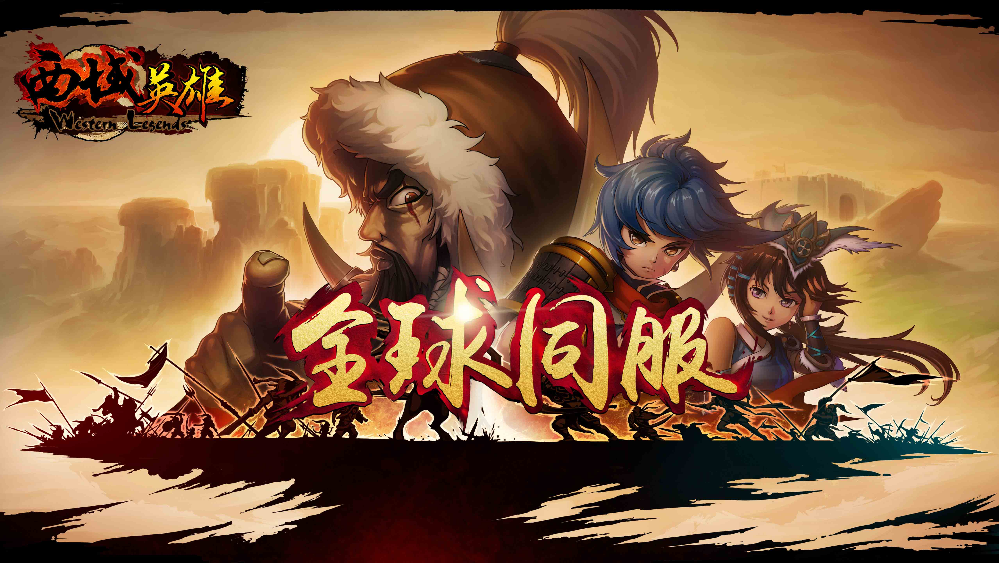
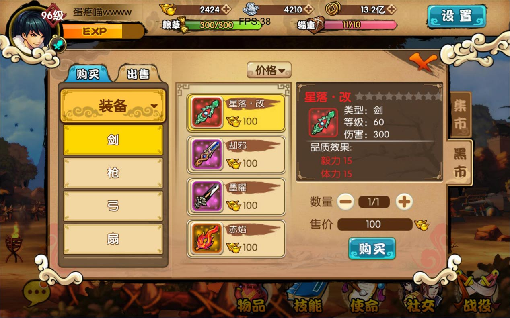
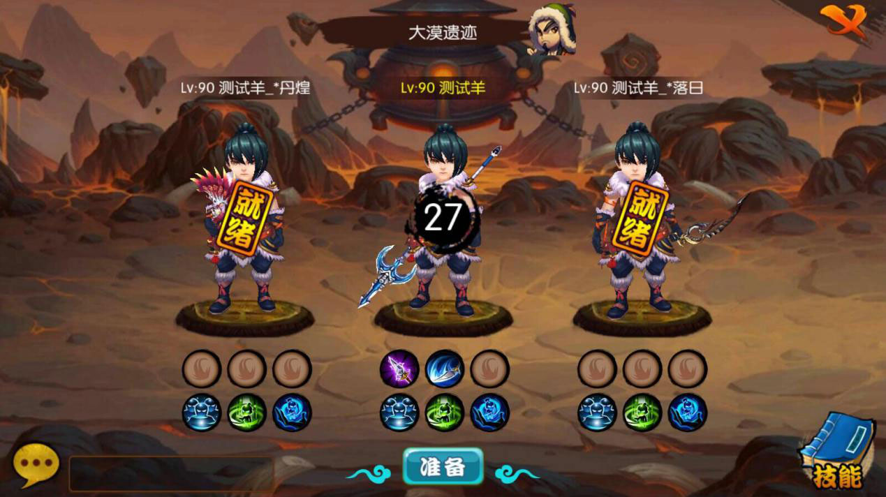

首页->正文内容
《西域英雄》手游是一款即时策略RPG网络手游。在实现即时策略的同时，为了保证玩家与玩家之间有足够的强交互行为，让《西域英雄》手游成为真正的网络游戏，游戏从很多方面进行了优化。强有力的交互系统，使得《西域英雄》能够在如今的手游红海中独树一帜。
不同于国内游戏行业常见的滚服形式，《西域英雄》从一开始就坚定信念，将会采取大服形式，让所有《西域英雄》的玩家都在同一片领域中战斗。同时，游戏拥有多项新手保护措施，让玩家即使慢人一步也完全拥有后来居上的能力！
【全球同服】
《西域英雄》手游拥有“集市”与“黑市”系统，玩家可以在“集市”中购买系统NPC出售的商品，而在“黑市”，玩家可以购买或者出售物品，与真实玩家进行交易。无论是副本还是活动中得到的物品，大部分均为未绑定，玩家可以根据自身的需要确定装备和材料是留作自用还是放到“黑市”上出售，也可以在“黑市”上购买自身需要的物品。
【自由交易】
《西域英雄》力求让玩家真正融入游戏大家庭中，不让《西域英雄》成为需要联网的单机游戏。为了达到这一目的，《西域英雄》手游不仅仅拥有基础的剧情任务副本，更有众多组队战斗模式，攻城战体会玩家与玩家之间实力的比拼，组队副本感受团队的智慧，更有即时组队打BOSS等你来玩。活动副本特色各异，等着玩家一一揭开他们的神秘面纱！
【组队副本】
关于《西域英雄》
《西域英雄》是深圳牛蛙互动斥资千万、历时两年精心打造的一款实时策略RPG手游，由即将热映的同名电视剧改编而成，讲述了西汉陈汤将军在西域平定匈奴的传奇故事。
游戏以特色 “划线”操作模式实现多单位精准操控。玩家可利用地形策略、兵种克制、丰富的武将技以及多变的军师技重现恢弘的战争场面；独创攻城战塔防策略玩法、绿色RPG养成体系、全球同服、自由交易，打造史诗级古战争手游大作。
更多信息请关注：
《西域英雄》官网：http://xy.niuwa123.com